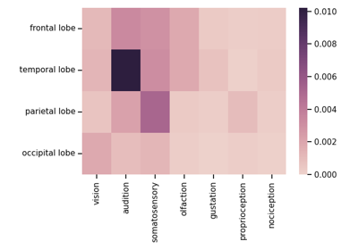

lisc.plts.counts.plot_dendrogram¶
- lisc.plts.counts.plot_dendrogram(data, labels=None, attribute='score', transpose=False, method='complete', metric='cosine', ax=None, **kwargs)[source]¶
Plot a dendrogram of the given data based on hierarchical clustering.
- Parameters:
- dataCounts or 2d array
Data to plot in a dendrogram.
- labelslist of str, optional
Labels for the dendrogram.
- attribute{‘score’, ‘counts’}, optional
Which data attribute from the counts object to plot the data for. Only used if the data input is a Counts object.
- transposebool, optional, default: False
Whether to transpose the data before plotting.
- methodstr, optional, default: ‘complete’
The linkage algorithm to use. See scipy.cluster.hierarchy.linkage for options.
- metricstr or function, optional, default: ‘cosine’
The distance metric to use. See scipy.spatial.distance.pdist for options.
- axmatplotlib.Axes, optional
Figure axes upon which to plot.
- **kwargs
Additional keyword arguments to pass through to scipy.cluster.hierarchy.dendrogram.
Notes
This function is a wrapper of the `scipy.cluster.hierarchy.dendrogram’ plot function.
Examples
See the example for the
compute_score()method of theCountsclass.
Examples using lisc.plts.counts.plot_dendrogram¶

Tutorial 05: Counts Analysis